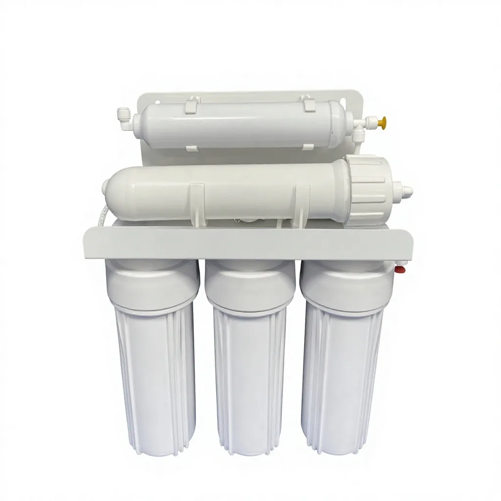
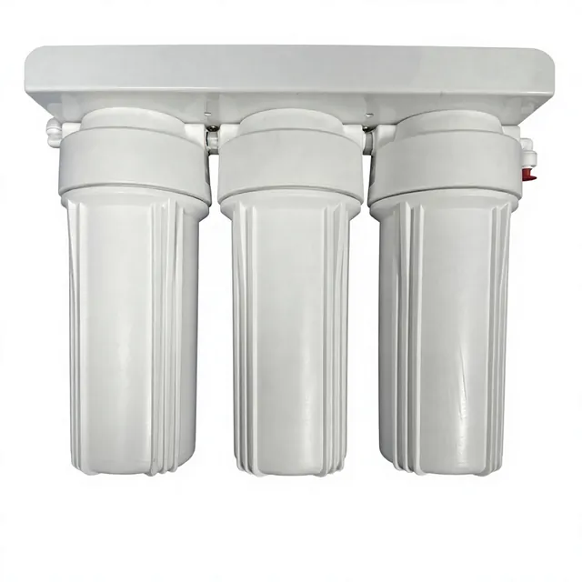
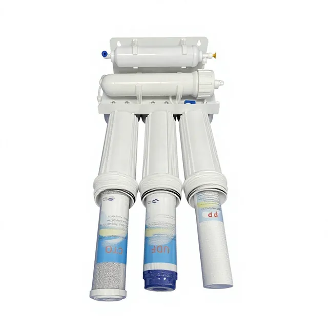
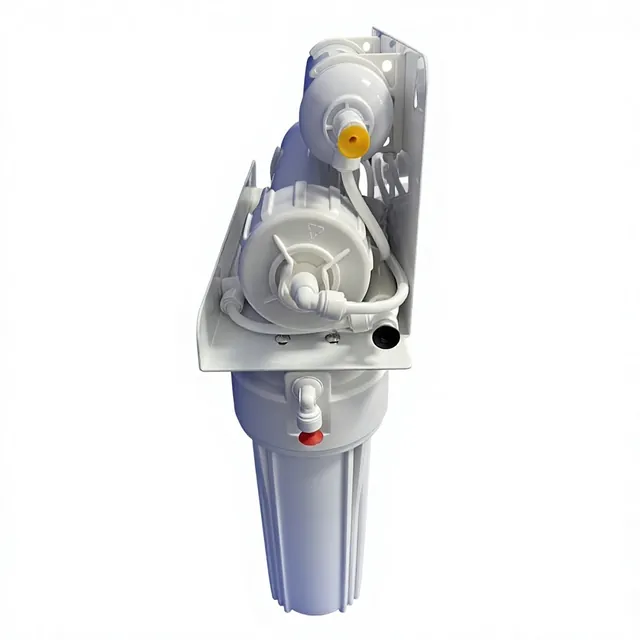
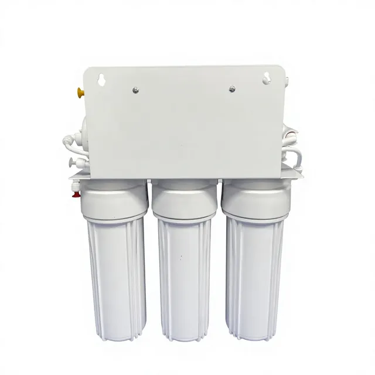
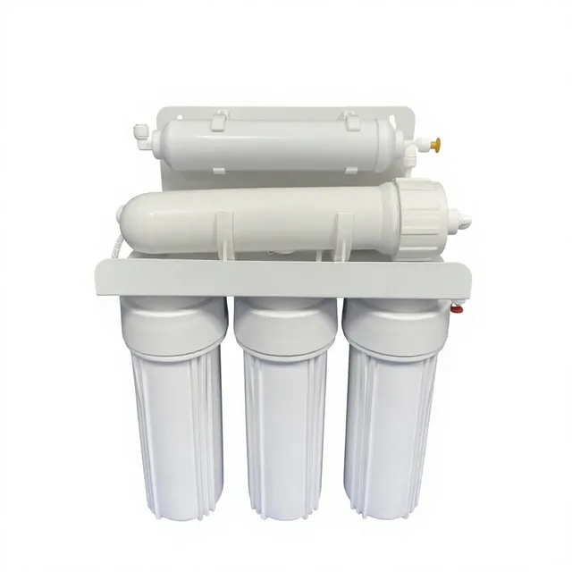
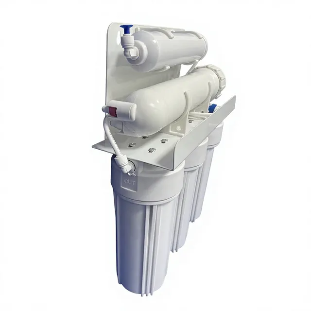

குழாய் நீர் அழுத்தத்துக்கான பம்ப் இல்லா RO வடிவமைப்பு
ஐந்து நிலை வடிகட்டல் செயல்முறை
PP + UDF/GAC + CTO + RO + T33. இந்த பம்ப் இல்லா ஐந்து நிலை RO நீர் சுத்திகரிப்பான் நிலையான நகராட்சி குழாய் நீர் அழுத்தத்தில் இயங்குகிறது; PP, UDF/GAC, CTO, RO மெம்பிரேன் மற்றும் T33 கட்டங்களை OEM மற்றும் விநியோக திட்டங்களுக்கு இணைக்கிறது.
தொழில்நுட்ப விவரங்கள்
| RO | பம்ப் இல்லா ஐந்து நிலை RO நீர் சுத்திகரிப்பான் |
|---|---|
| PP / UDF/GAC / CTO / RO / T33 | PP + UDF/GAC + CTO + RO + T33. இந்த பம்ப் இல்லா ஐந்து நிலை RO நீர் சுத்திகரிப்பான் நிலையான நகராட்சி குழாய் நீர் அழுத்தத்தில் இயங்குகிறது; PP, UDF/GAC, CTO, RO மெம்பிரேன் மற்றும் T33 கட்டங்களை OEM மற்றும் விநியோக திட்டங்களுக்கு இணைக்கிறது. |
| OEM/ODM | இந்த பம்ப் இல்லா ஐந்து நிலை RO நீர் சுத்திகரிப்பான் நிலையான நகராட்சி குழாய் நீர் அழுத்தத்தில் இயங்குகிறது; PP, UDF/GAC, CTO, RO மெம்பிரேன் மற்றும் T33 கட்டங்களை OEM மற்றும் விநியோக திட்டங்களுக்கு இணைக்கிறது. |
| MOQ | இந்த பம்ப் இல்லா ஐந்து நிலை RO நீர் சுத்திகரிப்பான் நிலையான நகராட்சி குழாய் நீர் அழுத்தத்தில் இயங்குகிறது; PP, UDF/GAC, CTO, RO மெம்பிரேன் மற்றும் T33 கட்டங்களை OEM மற்றும் விநியோக திட்டங்களுக்கு இணைக்கிறது. |
பயன்பாடுகள்
OEM/ODM ஆதரவு மற்றும் தரக் கட்டுப்பாடு
தயாரிப்பு படங்கள்







தயாரிப்பு வீடியோ
அடிக்கடி கேட்கப்படும் கேள்விகள்
குழாய் நீர் அழுத்தத்துக்கான பம்ப் இல்லா RO வடிவமைப்பு
ஐந்து நிலை வடிகட்டல் செயல்முறை
PP + UDF/GAC + CTO + RO + T33. இந்த பம்ப் இல்லா ஐந்து நிலை RO நீர் சுத்திகரிப்பான் நிலையான நகராட்சி குழாய் நீர் அழுத்தத்தில் இயங்குகிறது; PP, UDF/GAC, CTO, RO மெம்பிரேன் மற்றும் T33 கட்டங்களை OEM மற்றும் விநியோக திட்டங்களுக்கு இணைக்கிறது.